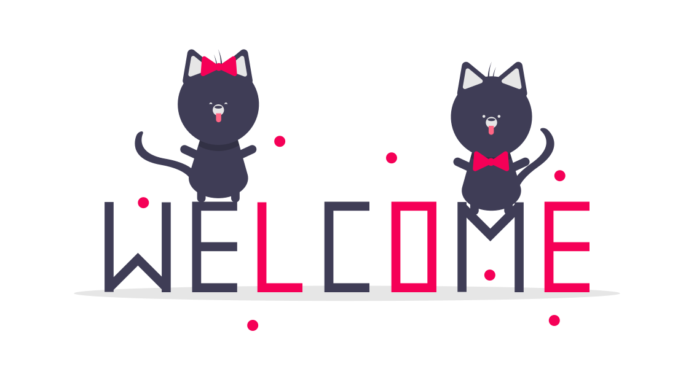

    <!-- <div class="container px-4 py-5 px-md-5 text-center text-lg-start my-5"> -->
      <div class="center">
      <div class="row gx-lg-5 align-items-center mb-5">
        <div class="col-lg-6 mb-5 mb-lg-0" style="z-index: 10">
          
        </div>
        <div class="col-lg-6 mb-5 mb-lg-0 position-relative">  
          <div class="card bg-glass">
            <div class="card-body px-4 py-5 px-md-5">
              <form #loginform="ngForm" (submit)="login()">
                <!-- Email input -->
                <div class="form-outline mb-4">
                  <label for="form3Example3">Email address</label>
                  <input type="email" name="emailId" [(ngModel)]="user.emailId" #emailId=ngModel id="form3Example3" class="form-control border border-dark" />
                  <span class="text-danger" *ngIf="emailId.touched && emailId.invalid">*Required</span>
                </div>
  
                <!-- Password input -->
                <div class="form-outline mb-4">
                  <label for="form3Example4">Password</label>
                  <input type="password" name="password" [(ngModel)]="user.password" #password="ngModel" id="form3Example4" class="form-control border border-dark" />
                  <span class="text-danger" *ngIf="password.touched && password.invalid">*Required</span>
                </div>
                
                <a (click)="ForgotPassword()" style="color:blue;">Forgot Password ?</a>
                
                <!-- Submit button -->
                <input type="submit" value="Login" class="btn btn-primary btn-block mb-4" [disabled]="!loginform.valid"/>
              </form>
            </div>
          </div>
        </div>
      </div>
    </div>

<script>
  if(msg == "Success"){
    Toastify({
      text: "This is a toast",
      duration: 3000,
      destination: "https://localhost:4200",
      newWindow: true,
      close: true,
      gravity: "top", // `top` or `bottom`
      position: "left", // `left`, `center` or `right`
      stopOnFocus: true, // Prevents dismissing of toast on hover
      style: {
        background: "linear-gradient(to right, #00b09b, #96c93d)",
      }
    }).showToast();
  }
</script>
